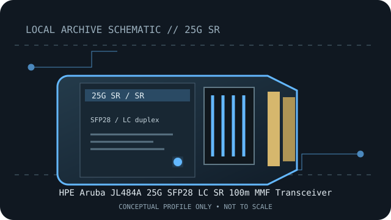

[ MODEL-SPECIFIC NETWORK HARDWARE RECORD ]
HPE Aruba JL484A 25G SFP28 LC SR 100m MMF Transceiver
Aruba-qualified 25GbE short-reach SFP28 multimode optic. Exact PID, host qualification and optical channel specifications should be checked before deployment.

IDENTIFICATION: Match the module label, vendor part number and revision to the manufacturer's documentation. Nominal link rate and maximum reach are specifications, not measured throughput or a guarantee for every installed channel.
Model-specific specifications and compatibility
| Subcategory | SFP transceivers: optical and copper |
|---|---|
| Exact product/model | HPE Aruba JL484A 25G SFP28 LC SR 100m MMF Transceiver |
| Form factor | SFP28, hot-pluggable 25G transceiver; HPE Aruba SKU JL484A. |
| Optical interface | 25GBASE-SR, 850nm optical signaling at a nominal 25Gb/s. |
| Nominal rate (not measured) | 25Gb/s nominal Ethernet link rate. |
| Wavelength and reach | Up to 100m on the supported multimode-fiber channel; fiber grade and channel construction affect usable reach. |
| Connector and fiber type | Duplex LC; multimode fiber (MMF). |
| Host coding and compatibility caveat | JL484A is an HPE Aruba qualified option, not a guarantee for every SFP28 host. Confirm the exact Aruba switch, port, software release and allowed transceiver list; third-party coding, port speed and FEC policy can change support. Do not infer 25GbE support solely from the cage shape. |
| Variant / deployment caveat | The product’s 100m rating is a channel maximum, not a measured distance for every installed cable plant. Pair with an appropriate 25GBASE-SR module at the far end. |
| Measured throughput | No bench result is claimed. Actual payload throughput depends on the host, link partner, protocol overhead and test method. |
Host qualification and installation notes
JL484A is an HPE Aruba qualified option, not a guarantee for every SFP28 host. Confirm the exact Aruba switch, port, software release and allowed transceiver list; third-party coding, port speed and FEC policy can change support. Do not infer 25GbE support solely from the cage shape.
The product’s 100m rating is a channel maximum, not a measured distance for every installed cable plant. Pair with an appropriate 25GBASE-SR module at the far end.
Check both endpoint modules, fiber grade, polarity, connector cleanliness and host port configuration. Verify the exact transceiver PID and revision against the current manufacturer compatibility source before placing the link in service.
Archival, ESD and fiber-safety notes
Record the exact PID, hardware revision, host port, firmware/software release and available digital optical diagnostics. Store the module in ESD-safe packaging with dust caps fitted. Never look into an active fiber or transceiver aperture.
Manufacturer sources
- HPE Aruba JL484A product specificationOfficial HPE listing for the exact JL484A SKU.
- HPE Aruba JL484A data sheet (PSN1014564053CZEN)Official HPE product data sheet for this transceiver.
Manufacturer compatibility varies by host, release, module coding and product revision. Consult the exact product source and current host qualification before use.